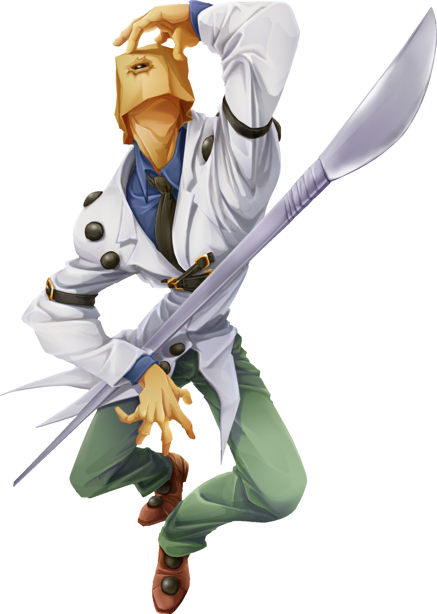

originally called Dr baldhead he was the best doctor until one day one of his patients dies, that brought him great distress so he started wearing a paper bag over his head to hide his shame
gameplay wise he has rng moves, he has 2 stances, standing and pole he can switch between stances by backquarter circle to get on pole, and down to get down from the pole.
here is a list of objects he can summon with his Obla Dee Obla Da move